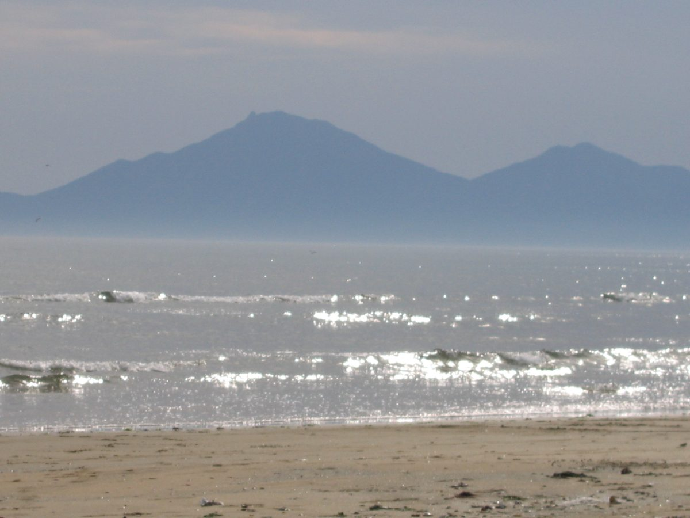

발전 5사 중 갈등관리 매뉴얼·교육 함께 갖춘 곳은 남동발전뿐…탈석탄·재생에너지 전환 앞두고 대비 미흡

박해철 의원, 에너지 공기업 9곳 자료 분석…동서·중부발전은 계획·교육 없어 앞으로 마련, 남부발전은 12쪽 운영세칙만 있고 교육·계획 없어 형식적 수준 평가, 다대포 해상풍력선 주민 찬반 갈등
석탄발전 폐지와 재생에너지 확대를 앞둔 발전공기업 5곳 가운데 갈등관리 세부 매뉴얼과 교육 프로그램을 함께 운영하는 곳은 한국남동발전 한 곳뿐인 것으로 나타났다. 박해철 국회 기후에너지환경노동위원회 의원(더불어민주당)이 22일 기후에너지환경부 산하 에너지 공기업 9곳의 제출 자료를 분석해 내놓은 결과다. 한국전력과 한국수자원공사, 한국수력원자력, 한국원자력환경공단, 남동발전은 갈등관리 매뉴얼과 교육 체계를 갖추고 있었지만, 동서발전과 중부발전은 지금은 관련 계획과 교육이 없고 앞으로 마련하겠다고 답했다. 서부발전은 매뉴얼은 없으나 외부 갈등관리 전문가 3명을 자문위원으로 두고 올해 내부 교육을 2차례 했고, 남부발전은 별표를 포함해 12쪽짜리 운영세칙만 있을 뿐 교육 실적과 향후 계획이 없어 의원실은 형식적 수준이라고 평가했다. 의원실은 남부발전이 추진하는 부산 다대포 해상풍력 사업에서 주민 사이 찬반 갈등이 생기고 있다고 설명했다. 박 의원은 전력산업 전환이 목표 시한을 두고 추진되는 만큼 "지역사회와의 갈등에 선제적으로 대비할 필요가 있다"고 말했다.
시민에너지 관점
발전 5사 가운데 갈등관리 체계를 제대로 갖춘 곳이 한 곳뿐이라는 결과는 걱정스럽지만, 갈등의 뿌리는 매뉴얼의 쪽수보다 이익과 결정권이 누구에게 가느냐에 있다. 스코틀랜드 케이스네스에서는 사업자가 40년간 600만 파운드가 넘는 공동체 기금을 내놓겠다고 했는데도 주민 반대 단체가 반대 의견 제출을 호소하고 있어, 사업자가 정한 보상만으로는 마음을 얻기 어렵다는 점을 보여 준다. 주민 참여가 사업을 늦춘다는 반론도 있지만, 처음부터 주민이 지분과 결정권을 나눠 가지면 반대가 찬성으로 바뀔 여지가 커지고 뒤늦은 소송과 지연을 줄일 수 있다. 남부발전은 갈등관리 교육부터 서두르되, 다대포 해상풍력에서 주민 지분 참여 방안을 협의 테이블에 함께 올려야 한다.
출처: 에너지신문 2026-10-22 권준범 원문 보기
発電5社のうち紛争管理マニュアルと教育をともに備えるのは南東発電だけ…脱石炭・再エネ転換を前に備え不足
パク・ヘチョル議員がエネルギー公企業9機関の資料を分析…東西・中部発電は計画・教育がなく今後整備、南部発電は12ページの運営細則だけで教育・計画なく形式的と評価、多大浦洋上風力では住民の賛否が対立
石炭火力の廃止と再生可能エネルギーの拡大を控えた発電公企業5社のうち、紛争管理の詳細なマニュアルと教育プログラムをともに運営しているのは韓国南東発電1社だけであることが分かった。国会気候エネルギー環境労働委員会のパク・ヘチョル議員（共に民主党）は22日、気候エネルギー環境部傘下のエネルギー公企業9機関から受け取った資料を分析し、こうした結果を明らかにした。韓国電力、韓国水資源公社、韓国水力原子力、韓国原子力環境公団、南東発電は紛争管理マニュアルと教育体制を整えていたが、東西発電と中部発電は現在は関連する計画も教育もなく、今後整えると回答した。西部発電はマニュアルはないものの外部の紛争管理専門家3人を諮問委員に委嘱し、今年は社内教育を2回行った。南部発電は別表を含め12ページの運営細則があるだけで、教育の実績も今後の計画もなく、議員室は形式的な水準だと評価した。議員室は、南部発電が進める釜山・多大浦（タデポ）洋上風力事業で住民の間に賛否の対立が生じていると説明した。パク議員は、電力産業の転換が目標の期限を定めて進められている以上、「地域社会との対立に先手を打って備える必要がある」と述べた。
市民エネルギーの視点
発電5社のうち紛争管理の体制をきちんと備えているのが1社だけという結果は懸念されるが、対立の根はマニュアルのページ数よりも、利益と決定権が誰に渡るかにある。英国スコットランドのケイスネスでは、事業者が40年間で600万ポンドを超える地域基金を出すとしているにもかかわらず、住民の反対団体が反対意見の提出を呼びかけており、事業者が決めた補償だけでは住民の心をつかみにくいことを示している。住民参加は事業を遅らせるとの反論もあるが、最初から住民が持ち分と決定権を分け合えば反対が賛成に変わる余地が広がり、後からの訴訟や遅れを減らせる。南部発電は紛争管理の教育を急ぐとともに、多大浦洋上風力での住民の持ち分参加の案を協議の場にあわせて載せるべきだ。
出典: Energy News 2026-10-22 Kwon Jun-beom 原文を読む
五大发电公司中同时具备冲突管理手册和培训的只有南东发电，面对去煤和可再生能源转型准备不足
国会议员Park Hae-cheol分析9家能源国企资料：东西发电和中部发电没有计划和培训、将来再制定，南部发电只有12页运营细则、没有培训和计划被评为流于形式，多大浦海上风电项目出现居民支持与反对的冲突
在即将关停煤电、扩大可再生能源的韩国五大发电国企中，同时运营详细冲突管理手册和培训项目的只有韩国南东发电一家。国会气候能源环境劳动委员会议员Park Hae-cheol（共同民主党）22日公布了对气候能源环境部下属9家能源国企所提交资料的分析结果。韩国电力、韩国水资源公社、韩国水力原子力、韩国原子力环境公团和南东发电都具备冲突管理手册和培训体系，而东西发电和中部发电答复称，目前没有相关计划和培训，今后将予制定。西部发电虽没有手册，但聘请了3名外部冲突管理专家担任咨询委员，今年进行了2次内部培训；南部发电只有包括附表在内共12页的运营细则，既无培训记录也无今后计划，议员办公室评价其流于形式。议员办公室说明，南部发电正在推进的釜山多大浦海上风电项目中，居民之间已出现支持与反对的冲突。Park议员表示，电力产业转型是按目标期限推进的，因此"有必要提前做好应对与地方社会冲突的准备"。
市民能源视角
五大发电公司中只有一家具备完善的冲突管理体系，这一结果令人担忧；但冲突的根源与其说在手册的页数，不如说在利益和决定权归谁。在英国苏格兰凯斯内斯，开发商表示将在40年内拿出600多万英镑的社区基金，当地居民反对团体仍在呼吁大家提交反对意见，这说明仅靠开发商单方面决定的补偿很难赢得人心。有人反驳说居民参与会拖慢项目，但如果居民从一开始就分享股份和决定权，反对转为支持的空间就会扩大，事后的诉讼和延误也会减少。南部发电应尽快开展冲突管理培训，同时把居民持股参与多大浦海上风电的方案一并摆上协商桌。
来源: Energy News 2026-10-22 Kwon Jun-beom 查看原文
Only Korea South-East Power among five generating companies runs both a conflict-management manual and training, leaving gaps ahead of coal phase-out and renewables shift
Rep. Park Hae-cheol's review of data from nine energy public companies finds East-West and Midland Power have no plans or training yet, while Southern Power has only a 12-page set of rules with no training or plans, judged a formality; residents are split over the Dadaepo offshore wind project
Of the five state-run power generating companies facing coal plant closures and a renewable energy build-out, only Korea South-East Power runs both a detailed conflict-management manual and a training program. Rep. Park Hae-cheol of the Democratic Party, a member of the National Assembly's Climate, Energy, Environment and Labor Committee, released the finding on the 22nd after analyzing material submitted by nine energy public companies under the Ministry of Climate, Energy and Environment. KEPCO, Korea Water Resources Corporation, Korea Hydro and Nuclear Power, Korea Radioactive Waste Agency and South-East Power had conflict-management manuals and training in place, while Korea East-West Power and Korea Midland Power said they currently have no such plans or training and will prepare them. Korea Western Power has no manual but has appointed three outside conflict-management experts as advisers and held two internal training sessions this year, while Korea Southern Power has only a 12-page set of operating rules including appendices, with no training record or future plans, which Park's office judged to be a mere formality. His office said residents have become divided for and against Southern Power's Dadaepo offshore wind project in Busan. Park said that because the power sector's transition is being pursued against target deadlines, "there is a need to prepare in advance for conflicts with local communities."
Citizen Energy View
It is worrying that only one of the five generating companies has a proper conflict-management system, but the root of conflict lies less in the page count of a manual than in who receives the profits and the power to decide. In Caithness, Scotland, a developer has offered a community fund of more than 6 million pounds over 40 years, yet a residents' group is still urging people to lodge objections, showing that compensation set by the developer alone struggles to win local support. Some argue that resident participation slows projects down, but when residents share equity and decision-making from the start, there is more room for opposition to turn into support and for late lawsuits and delays to shrink. Southern Power should hurry to train its staff in conflict management and, at the same time, put a plan for resident equity in the Dadaepo offshore wind project on the negotiating table.
Source: Energy News 2026-10-22 Kwon Jun-beom Read the original